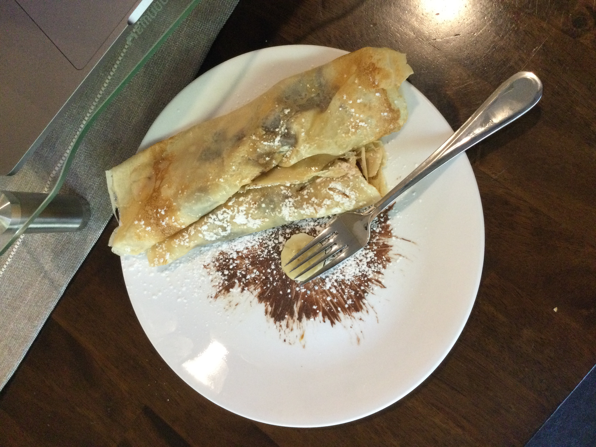
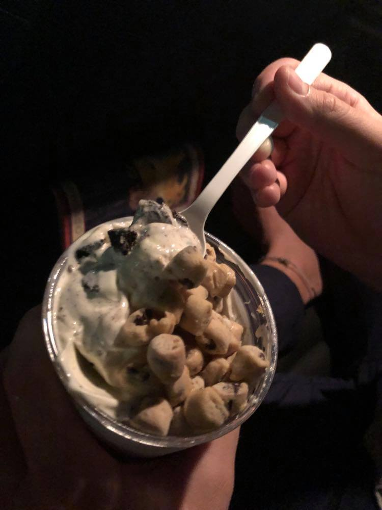

Another week done here at the MTC! Or VIrtual MTC I guess! It was such a long week but also
short at the same time. The amount of French and Tahitian shoved into my brain is crazy. Each
day we have classes where we learn new French language concepts and then have multiple concepts
I'll learn in hours of study on my own.
AND IT IS THE BEST!
This is the best thing I've ever been a part of and it's definitely hard. But so rewarding. I
highly recommend anyone who is even considering to jump onto the train and commit to serving a
mission.
Highlights
You guys know how much I love cooking. Yesterday we discussed food in French, explored some of
the food cultures in Tahiti, and then all cooked together via Zoom and made crepes. It was a
surreal moment.
We have gotten to draw a ton while on Zoom. Our whiteboards where we practice French always
quickly turn into chaos, full of drawings.
Elder Smith absolutely carried one of our discussions in French this week. We followed up with
our discussion from last week and we talked to her in french. I was really struggling to
understand but Elder Smith was able to help me understand and we communicated well throughout
it. It's awesome to see our hard work in French pay off.
CONS
Soeur Lunt left our district with school starting up and can no longer teach us. We'll
definitely miss her : /
ELDER CARTER: This man has said some crazy, and I mean CRAZY things this week. He doesn't like
PB&Js!!!! To quote him he said "[they're] an abomination". I know he's from England, but hearing
him disgrace PB&Js in an accent too was a step too far.
not to encourage cyberbullying at all, but please email your favorite thing about P&Js to Elder
Carter
haydn.carter@missionary.org
be nice ;)
Spiritual Thought
One of my instructors was talking to me and we decided to do a Book of Mormon read, in Français of course!

Scripture: 2 Nephi 31: 10
So this scripture is about some of Jacob's words to his family and friends. Who were trying their best but sometimes did not succeed.
"And he said unto the children of men: Follow thou me. Wherefore, my beloved brethren, can we follow Jesus save we shall be willing to keep the commandments of the Father?"
My instructor pointed out this amazing takeaway from this. It doesn't say keep the commandments or die. It doesn't say be perfect or you're doomed. It said "If you were willing".
"Our spirits are willing, but our flesh is weak." - Frére Schlitters
It's not about whether we're sinless or perfect. We all have our own personal temptations and adversity. It's about choosing whether you let those desires and difficulties control you and your life, or if you are Willing, to continually change yourself to do better.
 Find more photos here MTC Photo Album